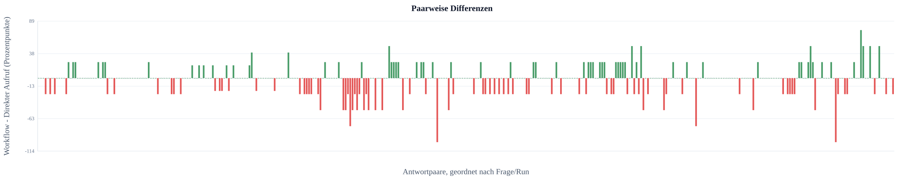
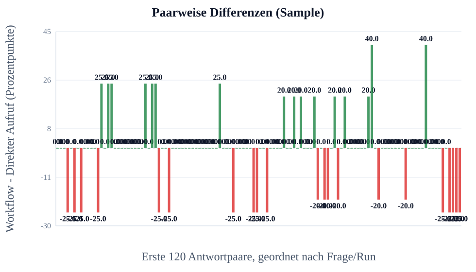
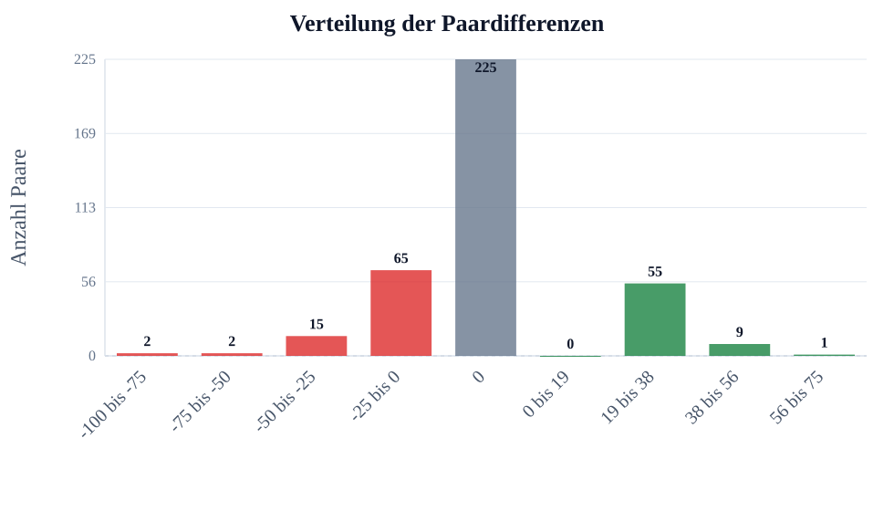
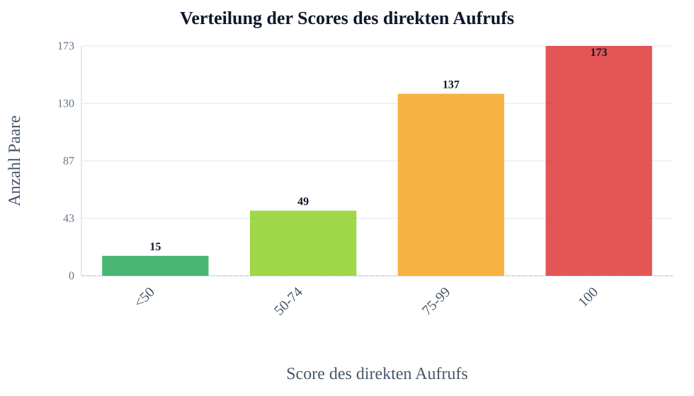
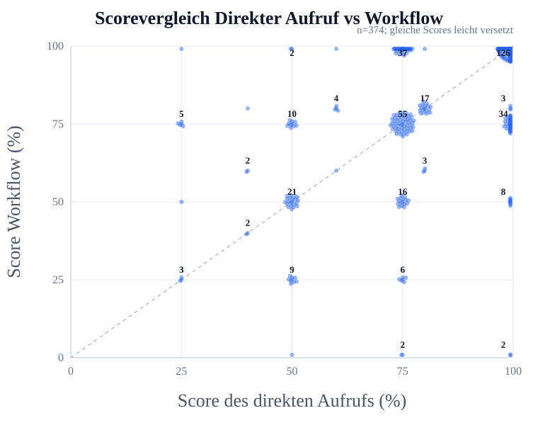

Ausgewählte Analyse
Auswahl
- Kriterien: Klarheit / Verständlichkeit
- Fragensets: default, example, flowmap_set7, flowreview_set7, impossibleforai, lausyprompt, promptoptimierung_schwierig, set1, set2, set3, set4, set5
- Run-Sets: Existing runs, run10, gpt3_prompt_schwer, lazy_gpt3, flowmap7, review7, set2_review, set2_more, set2_5, set3_flowmap, set4_flowreview, set3_more, set3_3, imposs_2_single, imposs_3_single
- Workflow-Setups: C – Prompt-Optimierung
- Modelle: GPT-4o Mini, Claude Haiku 3.5, DeepSeek Chat, GPT-4o, GPT-4.1, GPT-3.5 Turbo (legacy)
- Max Paare pro Kriterium: kein Limit
- Skip Paare pro Kriterium: 0
- Direkt-Score behalten: aus, nichts ausgeschlossen
- Stabiler Exportordner / Asset-Prefix: PO
Review-Antworten eingeschlossen: nein
Manuell ausgeschlossene Antworten eingeschlossen: nein
Kurze Ergebnistabelle
| Kriterium | n | Mittel Direkter Aufruf | Mittel Workflow | Diff. | p-Wert | Ergebnis |
|---|---|---|---|---|---|---|
| Klarheit / Verständlichkeit | 374 | 81.9 | 79.7 | -2.3 | 0.0374 | signifikante Verschlechterung |
LaTeX-gerenderte Tabelle:
{kind=link}
Felderklärung:
- Kriterium: Bewerteter Qualitätsbereich, z.B. Richtigkeit oder Vollständigkeit.
- n: Anzahl der vollständigen ausgewählten Paare, die in Statistik und Mittelwerte eingehen.
- Mittel Direkter Aufruf: Durchschnittlicher Score der Antworten des direkten Aufrufs in Prozent.
- Mittel Workflow: Durchschnittlicher Score der Workflow-Antworten in Prozent.
- Diff.: Mittlere Differenz Workflow minus Direkter Aufruf in Prozentpunkten.
- p-Wert: Wahrscheinlichkeit für einen mindestens so starken Effekt, falls in Wahrheit kein Unterschied besteht.
- Ergebnis: Kurze Interpretation des Tests, z.B. signifikante Verbesserung oder nicht signifikant.
Ausführliche Statistiktabelle
| Kriterium | n | Mittel Direkter Aufruf | Mittel Workflow | Diff. | SD Diff. | t-Wert | df | p-Wert | 95% KI | Cohen dz | Ergebnis |
|---|---|---|---|---|---|---|---|---|---|---|---|
| Klarheit / Verständlichkeit | 374 | 81.93 | 79.65 | -2.27 | 21.05 | -2.088 | 373 | 0.0374 | [-4.41; -0.14] | -0.11 | signifikante Verschlechterung |
LaTeX-gerenderte Tabelle:
{kind=link}
Felderklärung:
- Kriterium: Bewerteter Qualitätsbereich, z.B. Richtigkeit oder Vollständigkeit.
- n: Anzahl der vollständigen ausgewählten Paare, die in Statistik und Mittelwerte eingehen.
- Mittel Direkter Aufruf: Durchschnittlicher Score der Antworten des direkten Aufrufs in Prozent.
- Mittel Workflow: Durchschnittlicher Score der Workflow-Antworten in Prozent.
- Diff.: Mittlere Differenz Workflow minus Direkter Aufruf in Prozentpunkten.
- p-Wert: Wahrscheinlichkeit für einen mindestens so starken Effekt, falls in Wahrheit kein Unterschied besteht.
- Ergebnis: Kurze Interpretation des Tests, z.B. signifikante Verbesserung oder nicht signifikant.
- SD Diff.: Standardabweichung der paarweisen Differenzen; zeigt die Streuung des Effekts.
- t-Wert: Teststatistik des gepaarten t-Tests; wird mit dem kritischen Wert bzw. p-Wert beurteilt.
- df: Freiheitsgrade des Tests, hier normalerweise n minus 1.
- 95% KI: 95-Prozent-Konfidenzintervall der mittleren Differenz; enthält es 0, ist der Effekt unsicherer.
- Cohen dz: Effektstärke für gepaarte Daten; macht die Größe des Effekts vergleichbarer.
Tabelle zur Datengrundlage
| Kriterium | Gesamt | Gültig | Ausgewählt | Ausgelassen | Fehler | Review | Manuell ausgeschlossen | Unvollständig |
|---|---|---|---|---|---|---|---|---|
| Klarheit / Verständlichkeit | 388 | 388 | 374 | 0 | 0 | 14 | 0 | 0 |
LaTeX-gerenderte Tabelle:
{kind=link}
Felderklärung:
- Kriterium: Bewerteter Qualitätsbereich.
- Gesamt: Alle gefundenen Paare nach den gesetzten Filtern vor Bereinigung.
- Gültig: Paare ohne Fehler und ohne unvollständige oder unbewertete Seite.
- Ausgewählt: Paare, die tatsächlich in Analyse, Statistik und Charts verwendet werden.
- Ausgelassen: Paare, die durch den optionalen Direkt-Score-Behalten-Bereich ausgeschlossen wurden, weil der direkte Aufruf außerhalb des eingestellten Bereichs lag.
- Fehler: Paare, bei denen mindestens eine Seite einen technischen Fehler hatte.
- Review: Paare mit Review-Markierung; standardmäßig nicht in der Analyse enthalten.
- Manuell ausgeschlossen: Paare, die vom Nutzer manuell aus der Analyse ausgeschlossen wurden.
- Unvollständig: Paare mit fehlender Seite, laufendem Run oder fehlendem Score.
Diagramme
Paarweise Differenzen
| Feld | Wert |
|---|---|
| Datei | PO/images/08_klarheit_verstaendlichkeit/chart_paired_differences.svg |
| Bedeutung | Zeigt für jedes Paar die Differenz Workflow minus Direkter Aufruf. |

{kind=link}
Felderklärung:
- X-Achse / Antwortpaar: Ein gepaarter Vergleich aus direktem Aufruf und Workflow.
- Y-Achse / Differenz: Workflow minus Direkter Aufruf in Prozentpunkten.
- Zahlen auf Balken: Konkrete Differenz des jeweiligen Antwortpaars in Prozentpunkten.
- Y-Skala: Skala der Differenzwerte; positive und negative Bereiche werden getrennt sichtbar.
- 0-Linie: Beide Antworten wurden gleich bewertet.
- Positive Balken: Workflow war besser.
- Negative Balken: Direkter Aufruf war besser.
Paarweise Differenzen (Sample)
| Feld | Wert |
|---|---|
| Datei | PO/images/08_klarheit_verstaendlichkeit/chart_paired_differences_sample.svg |
| Bedeutung | Zeigt dieselbe Darstellung für die ersten 120 Paare. Diese Version ist besser lesbar, aber nicht vollstaendig. |

{kind=link}
Felderklärung:
- Datei: Exportiertes Diagramm.
- Bedeutung: Visualisiert einen Teil der statistischen Auswertung.
Paarweise Differenzen in Teilen
| Feld | Wert |
|---|---|
| Datei | PO/images/08_klarheit_verstaendlichkeit/chart_paired_differences_part_001.svg usw. |
| Bedeutung | Zusaetzliche mehrteilige Version mit bis zu 100 Paaren pro SVG. Diese Dateien sind besser lesbar als der vollstaendige Chart und decken zusammen alle Paare ab. |
Paarweise Differenzen in Teilen: siehe die einzelnen Teilgrafiken unten im Abschnitt Charts.
Felderklärung:
- Datei: Exportiertes Diagramm.
- Bedeutung: Visualisiert einen Teil der statistischen Auswertung.
Verteilung der Paardifferenzen
| Feld | Wert |
|---|---|
| Datei | PO/images/08_klarheit_verstaendlichkeit/chart_difference_distribution.svg |
| Bedeutung | Zeigt, ob der Workflow-Effekt stabil ist oder stark streut. |

{kind=link}
Felderklärung:
- X-Achse: Bereich der paarweisen Differenz in Prozentpunkten.
- Y-Achse: Anzahl der Paare in diesem Bereich.
- Zahlen auf Balken: Anzahl der Paare in diesem Differenzbereich.
- Grüne Balken: Differenzbereich liegt oberhalb von 0; Workflow war besser.
- Rote Balken: Differenzbereich liegt unterhalb von 0; Direkter Aufruf war besser.
- Mitte bei 0: Kein Unterschied zwischen Workflow und Direkter Aufruf.
- Rechts von 0: Workflow-Vorteile.
- Links von 0: Workflow-Nachteile.
Verteilung der Scores des direkten Aufrufs
| Feld | Wert |
|---|---|
| Datei | PO/images/08_klarheit_verstaendlichkeit/chart_scoreverteilung_direkter_aufruf.svg |
| Bedeutung | Zeigt, wie viele Antworten des direkten Aufrufs bereits nahe oder genau bei 100% lagen. Das macht den Deckeneffekt sichtbar. |

{kind=link}
Felderklärung:
- <50 / grün: Direkter Aufruf war klar schwach; viel Verbesserungspotenzial.
- 50-74 / hellgrün: Direkter Aufruf war teilweise richtig; noch deutliches Verbesserungspotenzial.
- 75-99 / orange: Direkter Aufruf war nahe an vollständig; wenig Verbesserungspotenzial.
- 100 / rot: Direkter Aufruf war bereits perfekt; Workflow kann nicht weiter verbessern und nur gleich bleiben oder verschlechtern.
- Zahlen auf Balken: Anzahl der Paare in dieser Score-Gruppe.
- Y-Achse: Anzahl der Paare.
- Zweck: Zeigt den Deckeneffekt in der Detailanalyse.
Scorevergleich Direkter Aufruf vs Workflow
| Feld | Wert |
|---|---|
| Datei | PO/images/08_klarheit_verstaendlichkeit/chart_direkter_aufruf_vs_workflow_scatter.svg |
| Bedeutung | Punkte oberhalb der Diagonale bedeuten, dass der Workflow höher bewertet wurde als der direkte Aufruf. Gleiche Score-Kombinationen werden leicht versetzt und mit ihrer Anzahl beschriftet. |

{kind=link}
Felderklärung:
- X-Achse: Score des direkten Aufrufs in Prozent.
- Y-Achse: Score des Workflows in Prozent.
- X/Y-Skala: Skalen von 0 bis 100 Prozent mit Hilfslinien.
- Diagonale: Gleicher Score bei direktem Aufruf und Workflow.
- Punkte oberhalb: Workflow war besser.
- Punkte unterhalb: Direkter Aufruf war besser.
- Zahlen an Punkten: Mehrere Paare liegen auf derselben Score-Kombination.
{kind=link}
{kind=link}
{kind=link}
{kind=link}